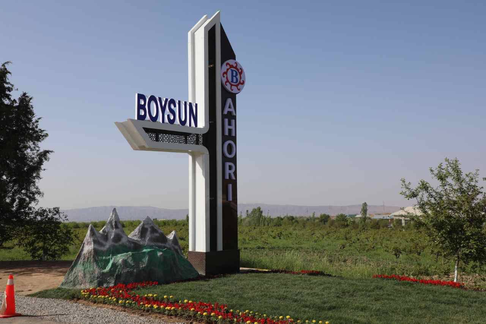

Uzbekistan's Intangible Cultural Heritage
May 1, 2026
Time until the Festival:
The Festival has begun!
Boysun Bahori (Spring of Boysun) is an international ethno-cultural festival held annually in spring in the Boysun district of Surkhandarya region, Uzbekistan. Recognized by UNESCO as part of the 'Intangible Cultural Heritage of Humanity,' this vibrant festival showcases traditional sports such as kurash and ko'pkari, folk music, dance, and handicraft exhibitions, celebrating the rich nomadic and settled cultures of Central Asia.

An'anaviy otliq o'yin — chavandozlar ulkan maydonda taka uchun kurashadi.
O'zbekistonning milliy kurash turi. Pahlavonlar kuchini o'lchab, g'alaba qozonadi.
Mintaqalardan kelgan folklor jamoalarining an'anaviy qo'shiq, raqs va musiqa tanlovlari.
Rang-barang havo sharlari osmon bo'ylab suzadi. Festival bayramining eng yorqin ko'rinishi.
Kashtachilik, kulolchilik, zargarlik va boshqa an'anaviy hunarmandchilik ko'rgazmalari.
Zamonaviy texnologiya va milliy san'atning uyg'unligi — kechki samoda dron rasmlari, lazer nuri va mushakbozlik.